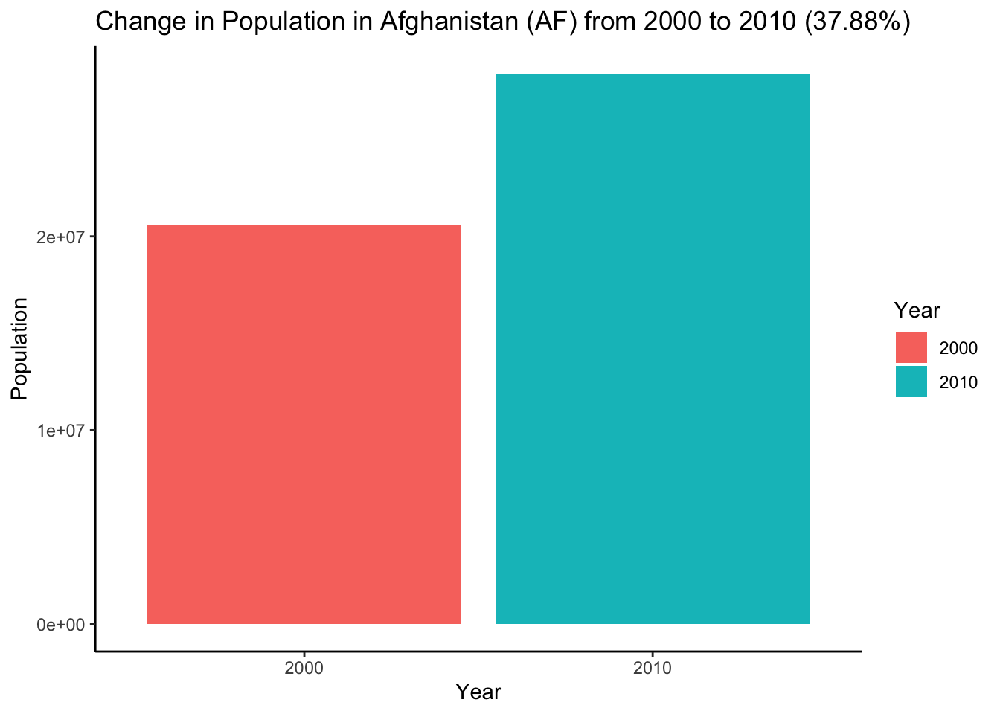

trees %>%
select(Height) %>%
filter(Height > 80)8 Using ChatGPT for Data Analysis
8.1 Introduction
ChatGPT, developed by OpenAI, is a language model that can be used to assist data analysts in various tasks. It can:
- Explain unfamiliar code
- Debug simple errors
- Add code comments
- Reformat code
- Generate plots
- Perform simple data wrangling
- Translate languages
- Translate programming languages
- Perform a fluid find and replace operation
Let’s get started and see how it works!
8.2 Models
As at our last check, ChatGPT comes in two main versions, both available at chat.openai.com:
| Model | Availability | Speed | Task Complexity |
|---|---|---|---|
| GPT-3.5 | Free | Fast | Simple tasks |
| GPT-4 | Paid / Bing | Slower | Complex tasks |
Both models have their advantages and use cases. GPT-3.5 is suitable for simple tasks and is free to use, while GPT-4, though slower and paid, can handle more complex tasks.
Bing’s AI chat service also uses GPT-4 under the hood (last checked in September 2023), so you can go to Bing if you want GPT-4 access without paying. The Bing interface is a bit clunky for data analysis tasks though, so if you can afford to pay for GPT-4, we highly recommend it.
8.3 1. Explain Unfamiliar Code
ChatGPT can explain unfamiliar code. For instance, if you encounter the following code:
You can ask ChatGPT, “What is this code doing?” and paste in the code.
Here is ChatGPT3.5’s response:
8.4 2. Debug Simple Errors
ChatGPT can assist in debugging straightforward errors. You can ask ChatGPT, “Please help me understand why the code is not working,” then paste in both your code and the error message.
For example:
data_subset_I <-
trees %>%
select(Height) %>%
filter(Height > 80)
summary(data_subset_l)Error message:
Error in summary(data_subset_I) : object 'data_subset_I' not foundChatGPT3.5 response:
8.5 3. Add Code Comments
ChatGPT can also assist in adding comments to your code. For instance, you can say, “Add comments to the following code,” then paste in your code.
data_subset_2 <-
trees %>%
select(Height) %>%
filter(Height > 80)
summary(data_subset_2)ChatGPT3.5 response:
8.6 4. Reformat Code
ChatGPT can help in reformatting code. For example, consider the following code:
temp<- trees %>% select(Height) %>%filter(Height > 80)You can ask ChatGPT, “Help me reformat this code nicely,” then paste in the code.
ChatGPT3.5 response:
8.7 5. Make Plots
ChatGPT can assist in creating plots with ggplot2. For instance, you might ask:
“Use ggplot2 to create a scatter plot of height against girth for the dataset shown” then paste in the head of the data.
head(trees) Girth Height Volume
1 8.3 70 10.3
2 8.6 65 10.3
3 8.8 63 10.2
4 10.5 72 16.4
5 10.7 81 18.8
6 10.8 83 19.7ChatGPT3.5 response:
You can then ask ChatGPT a follow-up question like:
- Add a best-fit line and write the equation of the line in the caption of the plot.
- Mark the mean height and mean girth on the plot.
- Center the plot title.
Here we may see the difference between GPT3.5 and 4.
ChatGPT3.5 response:
In the ChatGPT3.5 response, the equation of the line is missing from the caption.
Here is GPT4’s response:
With GPT-4, you get exactly what you want, including the equation in the caption at the bottom right of the plot.
8.8 6. Simple Data Wrangling
ChatGPT can help with simple data wrangling tasks. For instance:
Consider the following dataset:
head(trees) Girth Height Volume
1 8.3 70 10.3
2 8.6 65 10.3
3 8.8 63 10.2
4 10.5 72 16.4
5 10.7 81 18.8
6 10.8 83 19.7You might ask, “Give me dplyr code to find the mean and median girth, height, and volume.”
ChatGPT3.5 gives us this code:
8.9 7. Translate Language
ChatGPT can help translate text in your tutorial or documentation from one language to another, while preserving the code. If you use other translators, they often translate your code as well, which is undesirable.
For example, you can ask:
“Translate the following section of a tutorial into Spanish”
dplyr is part of the core of tidyverse, so it is automatically loaded with:
library(tidyverse)
It can also be loaded individually.
library(dplyr)ChatGPT 3.5 response:
You can verify the validity of this translation by translating it back into English in a different session.
8.10 8. Translate Programming Languages
ChatGPT can help translate between different programming languages. For example, you can say:
“Translate the following Stata code to R:”
recode age (18/35=1) (36/50=2), into(agegroup)ChatGPT 3.5 response:
8.11 9. Fluid Find and Replace
Lastly, ChatGPT can help you refactor your code in situations where a simple find and replace with your IDE would be time-consuming. For example, if “Afghanistan” is written in three different ways (with a capital “A”, in lowercase letters, and as a country code inthe title, “AF”), you could replace all instances with “Ghana”.
You can ask ChatGPT:
“Replace ‘afghanistan’ with ‘ghana’ for the code below:”
afghanistan_2000 <- population %>%
filter(country == "Afghanistan", year == 2000) %>%
pull(population)
afghanistan_2010 <- population %>%
filter(country == "Afghanistan", year == 2010) %>%
pull(population)
afghanistan_population <- data.frame(
year = c(2000, 2010),
population = c(afghanistan_2000, afghanistan_2010)
)
percent_change <-
((afghanistan_2010 - afghanistan_2000) / afghanistan_2000) * 100
ggplot(afghanistan_population,
aes(
x = factor(year),
y = population,
fill = factor(year)
)) +
geom_bar(stat = "identity") +
labs(
x = "Year",
y = "Population",
fill = "Year",
title = paste0(
"Change in Population in Afghanistan (AF) from 2000 to 2010 (",
round(percent_change, 2),
"%)"
)
) +
theme_classic()
ChatGPT 3.5 response:
8.12 Limitations of ChatGPT
While ChatGPT is a powerful tool for data analysts, it has some limitations:
- Lag in Learning: ChatGPT may struggle with newer software or libraries.
- Hallucinations: Always verify the output of ChatGPT as it can sometimes generate outputs that are incorrect or nonsensical.
- Limited Input Length: ChatGPT cannot process very long prompts. To avoid this, start new conversations frequently.
- Weak Math Skills: At the moment, ChatGPT is not ideal for complex calculations or data analysis.